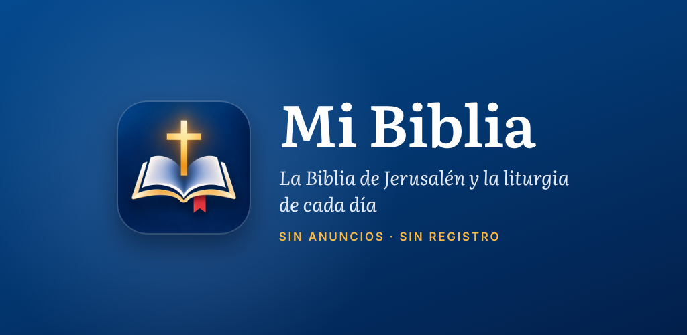

Ficha para las tiendas
Todo lo que piden Google Play Console y App Store Connect para Mi Biblia, listo para copiar. Junto a cada texto va su número de caracteres y el máximo de la tienda (los cuenta scripts/contar.mjs).
Enlaces y datos
Google Play
Ficha principal
| Tipo y categoría | Aplicación · Libros y obras de consulta |
|---|---|
| Icono | icono-512.png (512 × 512, PNG de 32 bits, opaco: a sangre y sin transparencia; Google le pone la máscara) |
| Gráfico destacado | grafico-destacado-1024x500.png (1024 × 500). El icono, el nombre y la frase van en el centro, porque Google lo recorta en algunos sitios. |



Capturas del teléfono (1080 × 1920)
Las ocho que admite Google, en orden: la primera es la que más se ve. Son 9:16, lo que pide Google para poder destacar la app; 1080 × 2400 no valdría (solo admite 16:9 o 9:16). Las de tablet son opcionales y no van.
- 01-inicio.png
- 02-biblia.png
- 03-versiculo.png
- 04-laudes.png
- 05-lecturas.png
- 06-rosario.png
- 07-comparar.png
- 08-mapa.png


Contenido de la aplicación
| Política de privacidad | La dirección de arriba. |
|---|---|
| Acceso a la aplicación | Toda la funcionalidad está disponible sin restricciones: no hay inicio de sesión ni cuentas. |
| Anuncios | No, la app no contiene anuncios. |
| Clasificación de contenido | Categoría «Referencia, noticias o educación». «No» a violencia, sexo, lenguaje malsonante, drogas, alcohol y tabaco, humor grosero, apuestas, interacción entre usuarios y compartir la ubicación. «Sí» a compras digitales: las suscripciones de apoyo (sale como «Compras en la aplicación» y no cambia la edad). Resultado esperado: PEGI 3 / Para todos. |
| Público objetivo | 13 años o más (13-15, 16-17 y 18 o más). ¿Puede atraer a niños? No. Si se incluyeran menores de 13, Google aplica el programa de Familias, con más requisitos. |
| ¿Es una app de noticias? | No: tiene una sección con las noticias de Vatican News, pero no es su función principal. |
| Seguridad de los datos | ¿Recoge o comparte la app alguno de los tipos de datos de usuario obligatorios? No. Resultado: «No se recogen datos» y «No se comparten datos con terceros». Las marcas, notas, diario y ajustes se guardan solo en el móvil (Google no cuenta como «recogido» lo que no sale del dispositivo). El pago de las suscripciones lo procesa Google Play; la app solo pregunta desde el móvil si hay una activa. Las noticias se descargan sin enviar ningún dato. |
| Aplicaciones de salud | La app no tiene funciones de salud: en la declaración, marca que no tiene ninguna. |
| Apps gubernamentales y funciones financieras | No / Ninguna. |
| ID de publicidad | No: la app no usa el ID de publicidad. |
| Servicio en primer plano | Uso especial (FOREGROUND_SERVICE_SPECIAL_USE), para la campana del silencio de la Lectio divina. Los textos, abajo. |
| Alarmas exactas | No hay que declarar nada: la app pide SCHEDULE_EXACT_ALARM («Alarmas y recordatorios»), que concede el propio usuario en los ajustes del sistema, y no USE_EXACT_ALARM, que es el permiso restringido y el único con declaración. Si Play Console preguntara, el uso es que la campana del final del silencio de la Lectio, que empieza el usuario, suene a su hora con la pantalla apagada. |
| Otros permisos especiales | Ninguno: no usa ubicación, SMS, llamadas, micrófono, cámara ni acceso a todos los archivos. |
Servicio en primer plano: la campana del silencio
Contenido de la app → Permisos de servicios en primer plano. Tipo: Uso especial; caso de uso: escribir el propio (no hay uno de la lista para temporizadores). Google lo revisa a mano y pide los textos en inglés:
Vídeo (subirlo a YouTube sin listar o a Drive): en un Android 14 sin «Alarmas y recordatorios» (Ajustes → Apps → Mi Biblia → Alarmas y recordatorios, desactivado), abrir Utilidades → Lectio, llegar al silencio, tocar «5», apagar la pantalla, enseñar en la pantalla de bloqueo el aviso «Silencio · quedan N min» con «Parar», esperar a la campana y enseñar que el aviso fijo desaparece y queda «Fin del silencio».
Si Google lo rechazara, se quita el servicio de modules/android-extras/android/src/main/AndroidManifest.xml en la app: la campana queda con la alarma normal y la pantalla del silencio ofrece «Permitir alarmas» (docs/PUBLICAR.md).
App Store
Nombre
El nombre de la App Store tiene que ser único y «Mi Biblia» puede estar cogido. Si lo está, elige una de las alternativas. El nombre que se ve debajo del icono en el iPhone sigue siendo «Mi Biblia» (lo pone la app, no la ficha).
Dice lo que hay dentro: la Escritura y la oración de la Iglesia.
Corta y con la palabra que más se busca. «Mi Biblia: Jerusalén y Liturgia» no cabe: tiene 31.
Información de la app
Sin «Android», «Google» ni «TalkBack»: Apple rechaza la ficha que nombra otras plataformas (norma 2.3.10). Lleva al final la EULA y la política de privacidad, que Apple pide en las apps con suscripciones.
No repiten las del nombre ni las del subtítulo, que Apple ya tiene en cuenta.
En la primera versión App Store Connect no pide este campo; queda para la siguiente o para TestFlight («Qué probar»).
| Categoría principal | Referencia |
|---|---|
| Categoría secundaria | Libros |
| Privacidad de la app | «No se recopilan datos» (Data Not Collected). Rastreo: no. Las compras las procesa Apple y la app no envía nada a ningún servidor. |
| Clasificación por edades | Responde «Ninguno» / «No» a todo el cuestionario: sin violencia, sexo, lenguaje, drogas, juego, contenido generado por usuarios, chat ni anuncios. El navegador de la app solo abre los enlaces de las noticias y los textos del Papa: «Acceso web sin restricciones», no. Resultado esperado: 4+. |
| Cifrado (exportación) | Solo usa el HTTPS del sistema: exento. La app ya lo declara (usesNonExemptEncryption: false en app.config.ts, que pone ITSAppUsesNonExemptEncryption = NO), así que App Store Connect no lo preguntará en cada versión. |
| Información para la revisión | No hace falta cuenta de prueba: no hay inicio de sesión. La nota, abajo, en «Suscripciones de apoyo». |
Capturas de iPhone 6,9″ (1320 × 2868)
El tamaño de los iPhone Pro Max de 6,9″; App Store Connect lo admite para esa casilla y las reduce para los iPhone más pequeños.
- 01-inicio.png
- 02-biblia.png
- 03-versiculo.png
- 04-laudes.png
- 05-lecturas.png
- 06-rosario.png
- 07-comparar.png
- 08-mapa.png
- 09-utilidades.png


Capturas de iPad 13″ (2064 × 2752)
Obligatorias porque la app admite iPad. Si prefieres no publicarla para iPad, se puede desactivar y en el iPad se abrirá en modo iPhone; entonces no hacen falta.
- 01-inicio.png
- 02-biblia.png
- 03-versiculo.png
- 04-laudes.png
- 05-lecturas.png
- 06-rosario.png
- 07-comparar.png
- 08-mapa.png
- 09-utilidades.png


Suscripciones de apoyo
La app ofrece tres suscripciones mensuales de apoyo en Ajustes → Apoya el mantenimiento. Hay que crearlas en cada tienda con exactamente estos identificadores; si no coinciden, la app no las encuentra. Con cualquiera de ellas deja de salir en Inicio el aviso que invita a compartir la app.
1. Apoyo mensual básico
Precio: 1,00 € al mes en Google Play · 0,99 € (o el precio más cercano a 1 €) en la App Store.
2. Apoyo mensual
Precio: 2,00 € al mes en Google Play · 1,99 € (o el más cercano a 2 €) en la App Store.
3. Apoyo mensual generoso
Precio: 3,00 € al mes en Google Play · 2,99 € (o el más cercano a 3 €) en la App Store.
Google Play Console
- Configura el perfil de pagos (Configuración → Perfil de pagos) si aún no lo tienes: sin él no se puede cobrar.
- Sube antes una versión de la app a una pista de prueba: Google no deja crear productos hasta que la app tiene el permiso de facturación.
- Monetizar → Productos → Suscripciones → Crear suscripción, una por cada identificador de arriba.
- En cada una, añade un plan base: renovación automática, periodo de facturación mensual, el precio en euros (Google calcula el de otros países) y actívalo. No añadas ofertas ni pruebas gratuitas.
- Para probarlo sin pagar: Configuración → Pruebas de licencia → añade tu correo de Google.
App Store Connect
- Firma el acuerdo de Apps de pago (Acuerdos, impuestos y banca), con los datos bancarios y fiscales. Sin él, las compras no funcionan.
- Tu app → Monetización → Suscripciones → crea un grupo llamado Apoyo.
- Dentro del grupo, crea las tres suscripciones con los identificadores de arriba: duración 1 mes, el precio, y en Localización (español) el nombre visible y la descripción.
- Ordena los niveles con el de 3 € arriba, para que el cambio de cantidad funcione bien.
- Cada suscripción pide una captura de la pantalla de compra para la revisión: hazla en el iPhone (TestFlight), en Ajustes → Apoya el mantenimiento.
- La primera vez, las suscripciones se envían a revisión junto con la versión de la app.
La norma 3.1.2 de Apple pide que una suscripción dé algo a cambio de forma continuada. La de Mi Biblia lo da: mientras está activa, Inicio no enseña el aviso fijo para compartir la app, que sale los dos primeros días de uso de cada semana y no se puede cerrar. Adjunta a la revisión una captura de Inicio con el aviso y otra de la pantalla de apoyo, hechas en el iPhone. Si aun así Apple las rechazara, la alternativa que admite son «propinas»: tres compras únicas de 1, 2 y 3 €, y habría que cambiar la app para ofrecerlas así.
Antes de subir la app
- Mi Biblia es una app nueva en las dos tiendas, con su propio proyecto de Expo y sus propias claves: no comparte nada con la app «Biblia de Jerusalén» (
docs/PUBLICAR.mden la app). - Google Play pide un .aab firmado con la clave de subida que crea EAS en el primer build de
production. La primera versión se sube a mano en Play Console (Prueba interna); después ya valeeas submit. - Las cuentas personales de Google Play creadas desde noviembre de 2023 deben hacer antes una prueba cerrada con 12 personas durante 14 días.
- Para iOS hace falta la cuenta de Apple Developer y compilar con EAS Build (en la nube) o con un Mac.
- Cuando haya fichas: cambia los botones «Muy pronto» de la portada de esta web y pon el enlace de la App Store en
STORE_URLS.iosdeservices/shareApp.tsen la app (el README de esta web lo explica). - Esta web no caduca: la dirección es de GitHub y no depende de ningún dominio. Solo no borres el repositorio.